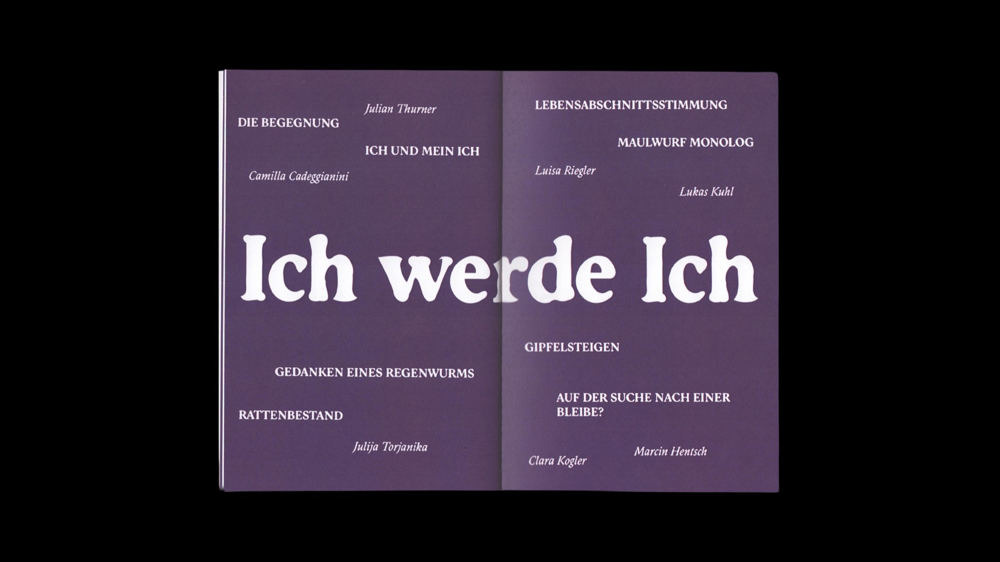
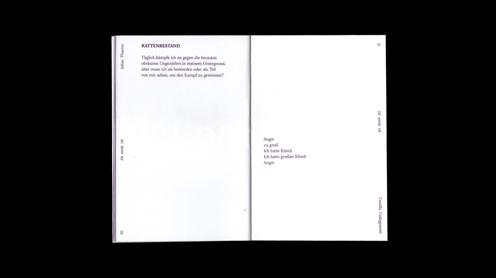

Liebes Tagebuch
Liebes Tagebuch
Zine Hörstation„Liebes Tagebuch, ich pass nicht rein“ — Einträge aus einem Leben mit Magersucht. Ein Zine nach Marlenes Geschichte, erzählt zwischen gesetzten Tagebucheinträgen und handgeschriebenen Seiten. Text und Gestaltung: Julian Thurner.
In der Ausstellung wurde das Tagebuch zur Hörstation: eine Umkleidekabine, in der man Platz nimmt und den Einträgen zuhört.



Ich werde Ich
Ich werde Ich
GedichtbandEin gemeinschaftlicher Gedichtband über das Ich im Werden — mit Texten von Julian Thurner, Camilla Cadeggianini, Luisa Riegler, Lukas Kuhl, Julija Torjanika, Clara Kogler und Marcin Hentsch.
Gestaltung: Julian Thurner.